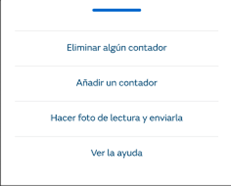
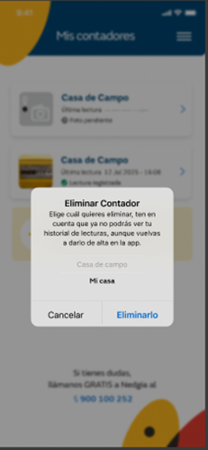
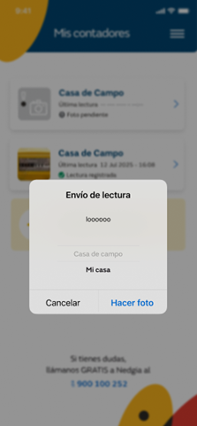

Si el usuario ha registrado algún contador, cuando entra en la app se le mostrará directamente la pantalla de Mis contadores.
En esta pantalla se muestran todos los contadores registrados previamente y la opción de crear un nuevo contador.

Eliminar algún contador -> al seleccionarla, se muestra una pantalla indicando que ha de seleccionar el contador que se quiere eliminar, toda la lista de contadores registrados y las opciones de "Eliminarlo" y "Cancelar".

Si se selecciona un contador y se pulsa “Eliminarlo”,
se borra el contador de la app y ya no aparece como contador registrado en Mis contadores
se llama a la interfaz del backoffice que elimina el perfil (servicio DELETE /api/Profile/{id}) y que actualiza en la entidad PROFILE del backoffice el atributo prf_deleted con el valor 1.
Si se pulsa “Cancelar”, se vuelve a la pantalla de Mis contadores
Añadir un contador -> cuando se pulsa, se muestra la pantalla del proceso de registro de contador
Hacer foto de lectura y enviarla
Si el usuario solo tiene un contador, se muestra la pantalla del proceso de toma de lectura
En caso contrario, se muestra la lista de contadores registrados y cuando se selecciona uno y se pulsa “Hacer foto”, se muestra la pantalla del proceso de toma de lectura de ese contador

Ver la ayuda -> cuando se pulsa, se muestra la ayuda de la aplicación que se muestra la primera vez